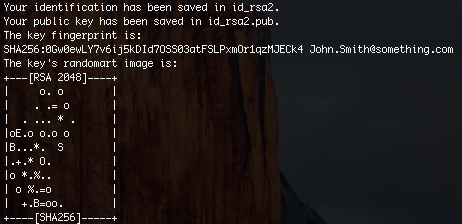
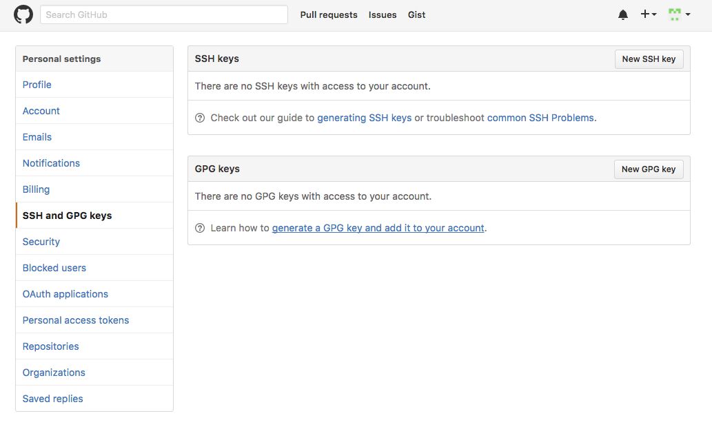
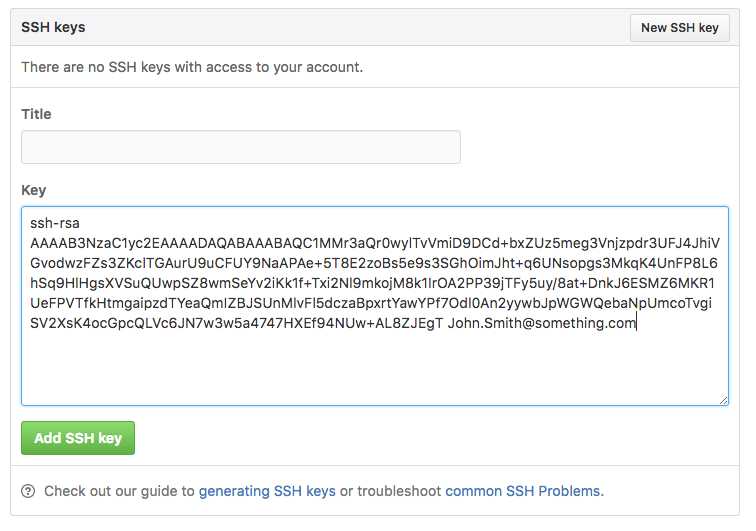
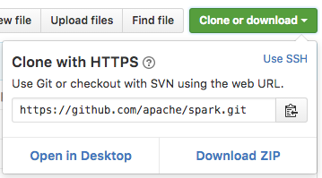

SSH Keys
When working with a GitHub repository, you’ll often need to identify
yourself to GitHub using your username and password. An SSH key is an
alternate way to identify yourself that doesn’t require you to enter
you username and password every time. (Note that the Windows GUI did
this authentication for you, behind the scenes, but you won’t have
that kind of luxury if you want/need to work on the command line.)
SSH keys come in pairs, a public key that gets shared with services like GitHub, and a private key that is stored only on your computer. If the keys match, you’re granted access.
The cryptography behind SSH keys ensures that no one can reverse engineer your private key from the public one.
Generating an SSH key pair
The first step in using SSH authorization with GitHub is to generate your own key pair.
You might already have an SSH key pair on your machine. You can check
to see if one exists by moving to your .ssh directory (it will be
under your home directory, if it exists) and listing the contents.
# Go into your SSH Directory. If this errors out, then you are fine.
cd ~/.ssh
# list the files in your current directory
ls
if you see something like “id_rsa.pub”, then you already have a key pair and don’t need to create a new one. You may skip to the below section Adding your key to Github. If you don’t see id_rsa.pub, use the following command to generate a new key pair:
# Make sure to replace your@email.com with the email address that is associated with your Github account.
ssh-keygen -t rsa -C "your@email.com"
When asked where to save the new key, hit enter to accept the default location. You will then be asked to provide an optional passphrase. This can be used to make your key even more secure, but for this lesson you can skip it by hitting enter twice.
Enter passphrase (empty for no passphrase):
Enter same passphrase again:
When the key generation is complete, you should see something like the following confirmation:

The random art image is an alternate way to match keys but we won’t be needing this.
Adding your key to Github
We now need to tell GitHub about your public key. Display the contents of your new public key file with the “cat” command:
The output should look something like this:
ssh-rsa AAAAB3NzaC1yc2EAAAADAQABAAABAQC1MMr3aQr0wylTvVmiD9DCd+bxZUz5meg3Vnjzpdr3UFJ4JhiVGvodwzFZs3ZKclTGAurU9uCFUY9NaAPAe+5T8E2zoBs5e9s3SGhOimJht+q6UNsopgs3MkqK4UnFP8L6hSq9HlHgsXVSuQUwpSZ8wmSeYv2iKk1f+Txi2Nl9mkojM8k1IrOA2PP39jTFy5uy/8at+DnkJ6ESMZ6MKR1UeFPVTfkHtmgaipzdTYeaQmIZBJSUnMlvFl5dczaBpxrtYawYPf7Odl0An2yywbJpWGWQebaNpUmcoTvgiSV2XsK4ocGpcQLVc6JN7w3w5a4747HXEf94NUw+AL8ZJEgT John.Smith@something.com
Copy the contents of the output to your clipboard.
Login to github.com and bring up your account settings by clicking your user icon in the top right and then clicking “Settings”.
Select SSH Keys from the side menu, then click the New SSH key button.

Name your key something whatever you like, and paste the contents of your clipboard into the Key text box. Remember to remove any trailing enter spaces, spaces, tabs, or new lines.

Finally, hit Add key to save. Enter your github password if prompted.
Shake hands with Github through ssh
This step is a test to make sure the ssh hash key entered in Github is
the same one saved on your computer.
- Enter
ssh -T git@github.com at the command line
- If everything is successful you should see the following message: “Hi ! You’ve successfully authenticated, but GitHub does not provide shell access.”
Using Your SSH Key
Going forward, you can use the SSH clone URL when copying a repo to your local machine. By Default, github sets the clone URL to HTTPS, so make sure you click “SSH”

This will allow you to bypass entering your username and password for future GitHub commands. Now you’re ready to push your previous repository to github!
 Git Foundations
1.0
Git Foundations
1.0